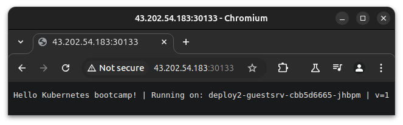

지난 포스팅, Kubernetes Service(2): LoadBalancer(MetalLB)에 이어 Ingress Type을 가볍게 살펴보고, Ingress-Nginx를 가볍게 붙여보겠습니다.
CloudNet@에서 진행하고 있는 K8s Advanced Network Study(이하, KANS)를 통해 학습한 내용을 정리합니다.
1. Ingress Type
이제, 신규 기능(New feature)은
Gateway API에 추가된다고 합니다.
우선, Kubernetes가 헷갈리는 것 중 하나가,
Ingress Type 과 LoadBalancer Type의 명확한 차이가 뭘까...?
라는 점이라고 봅니다.
물론, 그거 외에도 k8s에는 알쏭달쏭한 것들이 아-주 많지만요.
친절한 Docs에 따르면,
클러스터 외부로 클러스터 내부 서비스에 대한 HTTP 및 HTTPS 라우팅을 노출하는 것이라고 합니다.
Rules에 의한 다양한 백엔드 라우팅 외에도 Load Balancing, SSL Termination 그리고 name-based virtual hosting을 지원한다고 하는데… 이쯤되면 LoadBalancer Type이랑 다른게 없는 거라고 생각을 하곤 했습니다.
그래서 Ingress를 잊어야한다는 마음으로, 차이점만 짚어보고자 했습니다.
2. Ingress Type vs. LoadBalancer Type
위의 링크가 먼저 나와서 슥 봤는데, 그 오해는 어디까지나 CSP에서 제공하는 ALB에 Routing Rule을 넣고 SSL을 달아서 헷갈린게 아닐까 생각을 해봤습니다.
비용 같은 당연한 이야기는 빼고 해당 링크에서는 k8s 관점에서만 보면,
- 어디까지나 LoadBalancer Type은 Service의 확장
- Ingress와 달리, LB는 독립적 객체(Standalone Object)가 아님
차이가 있다는 걸 알게되었습니다.
3. 가벼운 k3s 실습 준비
아직 Ingress Type의 관짝에 못이 안 박혔기 때문에, 가벼운 실습 준비를 해봅니다.
이 또한 스터디에서 부트스트랩으로 제공되었기에 양해부탁드립니다.
# Install k3s-server
curl -sfL https://get.k3s.io | INSTALL_K3S_EXEC=" --disable=traefik" sh -s - server --token kanstoken --cluster-cidr "172.16.0.0/16" --service-cidr "10.10.200.0/24" --write-kubeconfig-mode 644
# Install k3s-agent
curl -sfL https://get.k3s.io | K3S_URL=https://192.168.10.10:6443 K3S_TOKEN=kanstoken sh -s -
kubeadm을 많이 다루신 현업 분들께서는 좀 많이 익숙한 파라미터들이 보입니다.
다만, --disable=traefik이라는 파라미터가 k3s server 설치 스크립트에서 볼 수 있는데요,
k3s가 Ingress Controller로 Traefik을 사용하는데, Ingress-Nginx를 사용하기 위해 Traefik을 비활성화 시키는 것입니다.
cat /etc/rancher/k3s/k3s.yaml
apiVersion: v1
clusters:
- cluster:
certificate-authority-data: LS0tLS1CR(중략)LS0tLS0K
server: https://127.0.0.1:6443
name: default
contexts:
- context:
cluster: default
user: default
name: default
current-context: default
kind: Config
preferences: {}
users:
- name: default
user:
client-certificate-data: LS0tLS1C(중략)LS0tLS0K
client-key-data: LS0tLS1(중략)LS0tLQo=
k3s는 SUSE및 Rancher에서 개발되어, CNCF Sandbox Project로 등록되어있는,
IoT & Edge Computing을 위한 k8s 배포도구이기에 rancher 폴더가 생겼음을 유추해볼 수 있습니다.
4. Ingress-Nginx 컨트롤러 배포 (Helm)
제가 조작하지 않는, Helm에 데인 이후로 선호도가 급?격하게 떨어지긴 했는데, 여튼 편하니까 해봅시다.
(a) Helm Values 파일 작성 및 Helm Repo 추가
- NodePort로 해당 서비스를 노출하기로 해봅시다.
cat <<EOT> ingress-nginx-values.yaml
controller:
service:
type: NodePort
nodePorts:
http: 30080
https: 30443
nodeSelector:
kubernetes.io/hostname: "k3s-s"
metrics:
enabled: true
serviceMonitor:
enabled: true
EOT
helm repo add ingress-nginx https://kubernetes.github.io/ingress-nginx
helm repo update
insecure warning이 뜨지만, 이게 학습이라 그저 넘어가도록 합시다.
WARNING: Kubernetes configuration file is group-readable. This is insecure. Location: /etc/rancher/k3s/k3s.yaml
WARNING: Kubernetes configuration file is world-readable. This is insecure. Location: /etc/rancher/k3s/k3s.yaml
"ingress-nginx" has been added to your repositories
WARNING: Kubernetes configuration file is group-readable. This is insecure. Location: /etc/rancher/k3s/k3s.yaml
WARNING: Kubernetes configuration file is world-readable. This is insecure. Location: /etc/rancher/k3s/k3s.yaml
(b) ns 생성 및 Helm Chart 배포
kubectl create ns ingress
helm install ingress-nginx ingress-nginx/ingress-nginx -f ingress-nginx-values.yaml --namespace ingress --version 4.11.2
# Check
kubectl get all -n ingress
kubectl get svc -n ingress ingress-nginx-controller
Warning은 에?러가 아니니까, 대개 잘 잡히는 것 같습니다.
kubectl create ns ingress
helm install ingress-nginx ingress-nginx/ingress-nginx -f ingress-nginx-values.yaml --namespace ingress --version 4.11.2
namespace/ingress created
WARNING: Kubernetes configuration file is group-readable. This is insecure. Location: /etc/rancher/k3s/k3s.yaml
WARNING: Kubernetes configuration file is world-readable. This is insecure. Location: /etc/rancher/k3s/k3s.yaml
NAME: ingress-nginx
LAST DEPLOYED: Thu Oct 10 23:39:48 2024
NAMESPACE: ingress
STATUS: deployed
REVISION: 1
TEST SUITE: None
NOTES:
The ingress-nginx controller has been installed.
Get the application URL by running these commands:
export HTTP_NODE_PORT=30080
export HTTPS_NODE_PORT=30443
export NODE_IP="$(kubectl get nodes --output jsonpath="{.items[0].status.addresses[1].address}")"
echo "Visit http://${NODE_IP}:${HTTP_NODE_PORT} to access your application via HTTP."
echo "Visit https://${NODE_IP}:${HTTPS_NODE_PORT} to access your application via HTTPS."
An example Ingress that makes use of the controller:
apiVersion: networking.k8s.io/v1
kind: Ingress
metadata:
name: example
namespace: foo
spec:
ingressClassName: nginx
rules:
- host: www.example.com
http:
paths:
- pathType: Prefix
backend:
service:
name: exampleService
port:
number: 80
path: /
# This section is only required if TLS is to be enabled for the Ingress
tls:
- hosts:
- www.example.com
secretName: example-tls
If TLS is enabled for the Ingress, a Secret containing the certificate and key must also be provided:
apiVersion: v1
kind: Secret
metadata:
name: example-tls
namespace: foo
data:
tls.crt: <base64 encoded cert>
tls.key: <base64 encoded key>
type: kubernetes.io/tls
kubectl get all -n ingress
kubectl describe svc -n ingress ingress-nginx-controller
그렇군요.
# kubectl get all -n ingress
NAME READY STATUS RESTARTS AGE
pod/ingress-nginx-controller-979fc89cf-lk7th 1/1 Running 0 92s
NAME TYPE CLUSTER-IP EXTERNAL-IP PORT(S) AGE
service/ingress-nginx-controller NodePort 10.10.200.235 <none> 80:30080/TCP,443:30443/TCP 92s
service/ingress-nginx-controller-admission ClusterIP 10.10.200.100 <none> 443/TCP 92s
service/ingress-nginx-controller-metrics ClusterIP 10.10.200.234 <none> 10254/TCP 92s
NAME READY UP-TO-DATE AVAILABLE AGE
deployment.apps/ingress-nginx-controller 1/1 1 1 92s
NAME DESIRED CURRENT READY AGE
replicaset.apps/ingress-nginx-controller-979fc89cf 1 1 1 92s
NAME TYPE CLUSTER-IP EXTERNAL-IP PORT(S) AGE
ingress-nginx-controller NodePort 10.10.200.235 <none> 80:30080/TCP,443:30443/TCP 92s
NodePort를 사용하는 것을 알 수 있습니다.
IP Addr이 다른 이유는 EC2 끄고 다시켰더니, 오류나서 다시 올렸습니다.
# kubectl describe svc -n ingress ingress-nginx-controller
(전략)
Type: NodePort
IP Family Policy: SingleStack
IP Families: IPv4
IP: 10.10.200.180
IPs: 10.10.200.180
Port: http 80/TCP
TargetPort: http/TCP
NodePort: http 30080/TCP
Endpoints: 172.16.0.3:80
Port: https 443/TCP
TargetPort: https/TCP
NodePort: https 30443/TCP
Endpoints: 172.16.0.3:443
Session Affinity: None
External Traffic Policy: Cluster
Events: <none>
(c) externalTrafficPolicy: Local
컨트롤러에 NodePort를 사용하고, externalTrafficPolicy: Local을 사용하면,
클라이언트의 요청이 도착한 노드로 바로 전달되어, 노드의 로컬 IP로부터 응답을 받을 수 있다고 하는데
일단 켜보고 환경값 체크를 합니다.
kubectl patch svc ingress-nginx-controller -n ingress -p '{"spec":{"externalTrafficPolicy":"Local"}}'
# service/ingress-nginx-controller patched
kubectl get cm -n ingress ingress-nginx-controller
kubectl exec deploy/ingress-nginx-controller -n ingress -it -- cat /etc/nginx/nginx.conf
# (생략) 평소에 보던 Nginx.conf 가 이했나....?
버전 정보도 확인해보겠습니다.
POD_NS=ingress
POD_NAME=$(kubectl get pods -n $POD_NS -l app.kubernetes.io/name=ingress-nginx --field-selector=status.phase=Running -o name)
kubectl exec $POD_NAME -n $POD_NS -- /nginx-ingress-controller --version
적당히 출력됩니다.
-------------------------------------------------------------------------------
NGINX Ingress controller
Release: v1.11.2
Build: 46e76e5916813cfca2a9b0bfdc34b69a0000f6b9
Repository: https://github.com/kubernetes/ingress-nginx
nginx version: nginx/1.25.5
-------------------------------------------------------------------------------
5. 테스트 서비스 배포 (ClusterIP, NodePort)
Ingress 컨트롤러가 ClusterIP, NodePosrt 무관하게 외부에 노출시킬 수 있는지에 대해
테스트 실습을 해볼 겁니다.
| Service Type | Port | Test App |
|---|---|---|
| ClusterIP | 9001 | nginx |
| NodePort | 9002 | kubetnetes-bootcamp |
| 정의 없음(Default: ClusterIP) | 9003 | echoserver |
(a) ClusterIP Service
cat <<EOT> clusterip-nginx.yaml
apiVersion: apps/v1
kind: Deployment
metadata:
name: deploy1-websrv
spec:
replicas: 1
selector:
matchLabels:
app: websrv
template:
metadata:
labels:
app: websrv
spec:
containers:
- name: pod-web
image: nginx
---
apiVersion: v1
kind: Service
metadata:
name: svc1-web
spec:
ports:
- name: web-port
port: 9001
targetPort: 80
selector:
app: websrv
type: ClusterIP
EOT
(b) NodePort Service
cat <<EOT> nodeport-kbc.yaml
apiVersion: apps/v1
kind: Deployment
metadata:
name: deploy2-guestsrv
spec:
replicas: 2
selector:
matchLabels:
app: guestsrv
template:
metadata:
labels:
app: guestsrv
spec:
containers:
- name: pod-guest
image: gcr.io/google-samples/kubernetes-bootcamp:v1
ports:
- containerPort: 8080
---
apiVersion: v1
kind: Service
metadata:
name: svc2-guest
spec:
ports:
- name: guest-port
port: 9002
targetPort: 8080
selector:
app: guestsrv
type: NodePort
EOT
(c) Default Service
cat <<EOT> default-echoserver.yaml
apiVersion: apps/v1
kind: Deployment
metadata:
name: deploy3-adminsrv
spec:
replicas: 3
selector:
matchLabels:
app: adminsrv
template:
metadata:
labels:
app: adminsrv
spec:
containers:
- name: pod-admin
image: k8s.gcr.io/echoserver:1.5
ports:
- containerPort: 8080
---
apiVersion: v1
kind: Service
metadata:
name: svc3-admin
spec:
ports:
- name: admin-port
port: 9003
targetPort: 8080
selector:
app: adminsrv
EOT
(d) 배포 및 확인
kubectl apply -f clusterip-nginx.yaml
kubectl apply -f nodeport-kbc.yaml
kubectl apply -f default-echoserver.yaml
(e) taint 설정 및 재배포 확인
현재는 Control Plane(Master) Node에 taint 설정이 없어서, pod가 배포된 것을 볼 수 있습니다.
# kubectl get ingress,svc,ep,pod -owide
NAME TYPE CLUSTER-IP EXTERNAL-IP PORT(S) AGE SELECTOR
service/kubernetes ClusterIP 10.10.200.1 <none> 443/TCP 27h <none>
service/svc1-web ClusterIP 10.10.200.69 <none> 9001/TCP 3m22s app=websrv
service/svc2-guest NodePort 10.10.200.117 <none> 9002:30133/TCP 3m22s app=guestsrv
service/svc3-admin ClusterIP 10.10.200.249 <none> 9003/TCP 108s app=adminsrv
NAME ENDPOINTS AGE
endpoints/kubernetes 192.168.10.10:6443 27h
endpoints/svc1-web 172.16.1.3:80 3m22s
endpoints/svc2-guest 172.16.0.5:8080,172.16.3.3:8080 3m22s
endpoints/svc3-admin 172.16.0.6:8080,172.16.2.3:8080,172.16.3.4:8080 108s
NAME READY STATUS RESTARTS AGE IP NODE NOMINATED NODE READINESS GATES
pod/deploy1-websrv-5c6b88bd77-w5nph 1/1 Running 0 3m22s 172.16.1.3 k3s-w1 <none> <none>
pod/deploy2-guestsrv-649875f78b-4tj8d 1/1 Running 0 3m22s 172.16.0.5 k3s-s <none> <none>
pod/deploy2-guestsrv-649875f78b-js862 1/1 Running 0 3m22s 172.16.3.3 k3s-w2 <none> <none>
pod/deploy3-adminsrv-7c8f8b8c87-4q8h6 1/1 Running 0 108s 172.16.3.4 k3s-w2 <none> <none>
pod/deploy3-adminsrv-7c8f8b8c87-6xwk5 1/1 Running 0 108s 172.16.0.6 k3s-s <none> <none>
pod/deploy3-adminsrv-7c8f8b8c87-hvq7n 1/1 Running 0 108s 172.16.2.3 k3s-w3 <none> <none>
우린 이걸 용?납할 수 없기 때문에, taint를 걸고 어떻게 작동하나 확인해볼 것입니다.
kubectl taint nodes k3s-s role=controlplane:NoSchedule
# node/k3s-s tainted
대신 빠른 적용 확인을 위해, 각 Deployment 정의에 terminationGracePeriodSeconds: 0를 추가합니다.
apiVersion: apps/v1
kind: Deployment
# (중략)
spec:
containers:
- name: pod-web
image: nginx
terminationGracePeriodSeconds: 0
---
# (후략)
이후에 다시 적용(apply)하고 확인해보겠습니다.
kubectl apply -f clusterip-nginx.yaml
kubectl apply -f nodeport-kbc.yaml
kubectl apply -f default-echoserver.yaml
Control Plane에 대한 Pod만 재배포 될 줄 알았는데, 생각해보니 terminationGracePeriodSeconds: 0 spec이 추가되었기 때문에 각 deployment 전체가 재배포되었습니다.
kubectl get ingress,svc,ep,pod -owide
NAME TYPE CLUSTER-IP EXTERNAL-IP PORT(S) AGE SELECTOR
service/kubernetes ClusterIP 10.10.200.1 <none> 443/TCP 27h <none>
service/svc1-web ClusterIP 10.10.200.69 <none> 9001/TCP 16m app=websrv
service/svc2-guest NodePort 10.10.200.117 <none> 9002:30133/TCP 16m app=guestsrv
service/svc3-admin ClusterIP 10.10.200.249 <none> 9003/TCP 14m app=adminsrv
NAME ENDPOINTS AGE
endpoints/kubernetes 192.168.10.10:6443 27h
endpoints/svc1-web 172.16.1.4:80 16m
endpoints/svc2-guest 172.16.2.4:8080,172.16.3.6:8080 16m
endpoints/svc3-admin 172.16.1.5:8080,172.16.2.5:8080,172.16.3.5:8080 14m
NAME READY STATUS RESTARTS AGE IP NODE NOMINATED NODE READINESS GATES
pod/deploy1-websrv-69cb66b964-nppv5 1/1 Running 0 96s 172.16.1.4 k3s-w1 <none> <none>
pod/deploy2-guestsrv-cbb5d6665-jhbpm 1/1 Running 0 86s 172.16.3.6 k3s-w2 <none> <none>
pod/deploy2-guestsrv-cbb5d6665-sb67h 1/1 Running 0 95s 172.16.2.4 k3s-w3 <none> <none>
pod/deploy3-adminsrv-77b7c78b98-79pgl 1/1 Running 0 94s 172.16.3.5 k3s-w2 <none> <none>
pod/deploy3-adminsrv-77b7c78b98-vfbv5 1/1 Running 0 93s 172.16.1.5 k3s-w1 <none> <none>
pod/deploy3-adminsrv-77b7c78b98-zvkgv 1/1 Running 0 95s 172.16.2.5 k3s-w3 <none> <none>
여기까지는 예상된대로, 서비스 포트 9001, 9002, 9003이 각각 배포되었음을 확인할 수 있습니다.
이 상태로는 http://<EC2_PUBLIC_IP>:30133/ 만 외부에서 접속할 수 있습니다.

Ingress가 ClusterIP, NodePort 무관하게 외부에 서비스를 배포하게 만들어볼 것입니다.
6. Ingress 리소스 생성
ALB(L7) Rule을 정하는 것과 유사합니다.
cat <<EOT> ingress-nginx-rule-1.yaml
apiVersion: networking.k8s.io/v1
kind: Ingress
metadata:
name: ingress-rule-1
namespace: default
annotations:
#nginx.ingress.kubernetes.io/rewrite-target: /
spec:
ingressClassName: nginx
rules:
# - host: nginx.minseong.xyz
# http:
# paths:
- http:
paths:
- path: /
pathType: Prefix
backend:
service:
name: svc1-web
port:
number: 80
- path: /kbc
pathType: Prefix
backend:
service:
name: svc2-guest
port:
number: 8080
- path: /guest
pathType: Prefix
backend:
service:
name: svc3-admin
port:
number: 8080
EOT
path 기반으로 서비스를 라우팅하려는 것을 확인할 수 있습니다.
서비스의 포트가 아닌 이름으로 지정할 수 있습니다.
# kubectl get ingress -owide
NAME CLASS HOSTS ADDRESS PORTS AGE
ingress.networking.k8s.io/ingress-rule-1 nginx * 10.10.200.180 80 43s
Rule이 적용되었음을 알 수 있습니다.
# kubectl describe ingress ingress-rule-1
Name: ingress-rule-1
Labels: <none>
Namespace: default
Address: 10.10.200.180
Ingress Class: nginx
Default backend: <default>
Rules:
Host Path Backends
---- ---- --------
*
/ svc1-web:80 ()
/kbc svc2-guest:8080 ()
/guest svc3-admin:8080 ()
Annotations: <none>
Events:
Type Reason Age From Message
---- ------ ---- ---- -------
Normal Sync 22m (x2 over 23m) nginx-ingress-controller Scheduled for sync
위의 룰이 컨트롤러에 어떻게 적용되어있는지 보도록 합시다.
# kubectl exec deploy/ingress-nginx-controller -n ingress -it -- cat /etc/nginx/nginx.conf | grep 'location /' -A5
location /guest/ {
set $namespace "default";
set $ingress_name "ingress-rule-1";
set $service_name "svc3-admin";
set $service_port "8080";
--
location /kbc/ {
set $namespace "default";
set $ingress_name "ingress-rule-1";
set $service_name "svc2-guest";
set $service_port "8080";
--
location / {
set $namespace "default";
set $ingress_name "ingress-rule-1";
set $service_name "svc1-web";
set $service_port "80";
--
(후략)
(a) 접속 확인
아래의 출력된 링크를 로컬의 웹브라우저로 접속해보면 아주 잘 접속됩니다.
echo -e "Ingress1 sv1-web URL = http://$(curl -s ipinfo.io/ip):30080"
# Ingress1 sv1-web URL = http://43.202.54.183:30080
echo -e "Ingress1 sv2-guest URL = http://$(curl -s ipinfo.io/ip):30080/guest"
# Ingress1 sv2-guest URL = http://43.202.54.183:30080/guest
echo -e "Ingress1 sv3-admin URL = http://$(curl -s ipinfo.io/ip):30080/kbc"
# Ingress1 sv3-admin URL = http://43.202.54.183:30080/kbc
(b) 더 알아보기
로컬 환경에서 좀 더 볼까요?
EC2_MASTER_PUB_IP=<EC2 Control Plane의 Public IP>
# EC2_MASTER_PUB_IP=43.202.54.183
for i in {1..100}; do curl -s $EC2_MASTER_PUB_IP:30080/guest ; done | sort | uniq -c | sort -nr
Nginx 기준, 뭔가 좀 익숙한 값들이 보입니다.
특히 Ingress를 통해, 어디(로컬)에서 접근을 했는지 알 수 있습니다.
800
100 x-scheme=http
100 x-real-ip=<로컬 환경의 공인 IP>
100 x-forwarded-scheme=http
100 x-forwarded-proto=http
100 x-forwarded-port=80
100 x-forwarded-host=43.202.54.183:30080
100 x-forwarded-for=<로컬 환경의 공인 IP>
100 user-agent=curl/8.5.0
100 server_version=nginx: 1.13.0 - lua: 10008
100 Server values:
100 request_version=1.1
100 request_uri=http://43.202.54.183:8080/guest
100 Request Information:
100 Request Headers:
100 Request Body:
100 real path=/guest
100 query=
100 Pod Information:
100 -no pod information available-
100 -no body in request-
100 method=GET
100 host=43.202.54.183:30080
100 client_address=172.16.0.3
100 accept=*/*
34 Hostname: deploy3-adminsrv-77b7c78b98-zvkgv
33 Hostname: deploy3-adminsrv-77b7c78b98-vfbv5
33 Hostname: deploy3-adminsrv-77b7c78b98-79pgl
1 x-request-id=fda5b56e29f9c0109124762aab619f3d
1 x-request-id=fc5161bd78bb6a82f578c854e79a6dd7
1 x-request-id=fb98bfdbf78a87071c5ad119c8f01c7c
1 x-request-id=f6e07d531bb0a54a029abb4c0657b55b
1 x-request-id=f4e66a64fac7e0f21df5577058c623c8
1 x-request-id=f050b3f7f7e22b55b1b80c7a794cb659
(후략)
필요한 정보만 보고 싶다면, 이렇게 할 수도 있겠네요.
curl -s $EC2_MASTER_PUB_IP:30080/guest | egrep '(client_address|x-forwarded-for)'
# client_address=172.16.0.3
# x-forwarded-for=<로컬 환경의 공인 IP>
그럼 이 client_address는 어디서 튀어나온 걸까요?
앞에서 4.-(a) 에서 helm으로 첫 배포 후 확인했을 때의 엔드포인트 입니다.
kubectl describe svc -n ingress ingress-nginx-controller | grep Endpoints
# Endpoints: 172.16.0.3:80
# Endpoints: 172.16.0.3:443
kubectl get -n ingress pods -owide
# NAME READY STATUS RESTARTS AGE IP NODE NOMINATED NODE READINESS GATES
# ingress-nginx-controller-979fc89cf-f24fk 1/1 Running 0 29h 172.16.0.3 k3s-s <none> <none>
7. TLS Termination (처리) 맛보기
올해 초에 자동 갱신되어버린 테스트 도메인을 사용해봅시다.
음 호스트 정보 제어를 통해 해봅시다.
가상의 호스트 kkumtree.xyz가 있다고 해봅시다.
(a) 배포 준비
TLS 통신을 위한 인증서를 secret으로 저장하여 쓰는 것입니다.
cat <<EOT> tls-echoserver.yaml
apiVersion: v1
kind: Pod
metadata:
name: pod-https
labels:
app: https
spec:
containers:
- name: container
image: k8s.gcr.io/echoserver:1.6
terminationGracePeriodSeconds: 0
---
apiVersion: v1
kind: Service
metadata:
name: svc-https
spec:
selector:
app: https
ports:
- port: 8080
EOT
cat <<EOT> ssl-termination-ingress.yaml
apiVersion: networking.k8s.io/v1
kind: Ingress
metadata:
name: https
spec:
ingressClassName: nginx
tls:
- hosts:
- kkumtree.abc
secretName: secret-https
rules:
- host: kkumtree.abc
http:
paths:
- path: /
pathType: Prefix
backend:
service:
name: svc-https
port:
number: 8080
EOT
(b) 배포 및 인증서 생성
적용은 다음과 같이 합니다.
- 테스트 POD 배포
- 가상의 도메인 지정
- Ingress 리소스 생성
- 인증서 생성 및 Secret 생성
- 테스트
TEST_DNS=kkumtree.abc
kubectl apply -f tls-echoserver.yaml
kubectl apply -f ssl-termination-ingress.yaml
openssl req -x509 -nodes -days 365 -newkey rsa:2048 -keyout tls.key -out tls.crt -subj "/CN=$TEST_DNS/O=$TEST_DNS"
kubectl create secret tls secret-https --key tls.key --cert tls.crt
kubectl get secrets secret-https -o yaml
참 쉽죠? 스터디 없었으면 99.99% 헤멤
# (전략)
secret/secret-https created
apiVersion: v1
data:
tls.crt: LS0tLS1C(중략)LS0tLQo=
tls.key: LS0tLS1C(중략)LS0tLS0K
kind: Secret
metadata:
creationTimestamp: "2024-10-13T08:33:44Z"
name: secret-https
namespace: default
resourceVersion: "81976"
uid: 3cc3014e-(중략)-c8422a2197e3
type: kubernetes.io/tls
(c) 확인
가짜 도메인은 직접 쓸 수 없기에 /etc/hosts 등록이나
로컬에서 아래와 같이 설정하여 확인합니다.
옵션의 대소문자 유의
EC2_MASTER_PUB_IP=<6.(b)에서 활용했음>
# EC2_MASTER_PUB_IP=43.202.54.183
TEST_DNS=<테스트용으로 지정한 가짜 도메인>
# TEST_DNS=kkumtree.abc
curl -Lk -H "host: $TEST_DNS" https://$EC2_MASTER_PUB_IP:30443
다음과 같이 나올 겁니다.
# curl -Lk -H "host: $TEST_DNS" https://$EC2_MASTER_PUB_IP:30443
Hostname: pod-https
Pod Information:
-no pod information available-
Server values:
server_version=nginx: 1.13.1 - lua: 10008
Request Information:
client_address=172.16.0.3
method=GET
real path=/
query=
request_version=1.1
request_uri=http://kkumtree.abc:8080/
Request Headers:
accept=*/*
host=kkumtree.abc
user-agent=curl/8.5.0
x-forwarded-for=<로컬 환경의 공인 IP>
x-forwarded-host=kkumtree.abc
x-forwarded-port=443
x-forwarded-proto=https
x-forwarded-scheme=https
x-real-ip=<로컬 환경의 공인 IP>
x-request-id=0b3e51d89dfede6b31e72e8a1d09a25a
x-scheme=https
Request Body:
-no body in request-
8. 뱀다리
- Ngnix Ingress Annotation 예제들
가끔은 눈을 감을 줄 알아야하나… 싶은…
#nginx.ingress.kubernetes.io/rewrite-target: /
#nginx.ingress.kubernetes.io/ssl-redirect: "false"
#nginx.ingress.kubernetes.io/upstream-hash-by: $remote_addr
#nginx.ingress.kubernetes.io/affinity: "cookie"
#nginx.ingress.kubernetes.io/session-cookie-name: "route"
#nginx.ingress.kubernetes.io/session-cookie-hash: "sha1"
#nginx.ingress.kubernetes.io/session-cookie-expires: "172800"
#nginx.ingress.kubernetes.io/session-cookie-max-age: "172800"
#nginx.ingress.kubernetes.io/session-cookie-path: "/; Secure; HttpOnly"
#nginx.ingress.kubernetes.io/session-cookie-secure: "true"
#nginx.ingress.kubernetes.io/session-cookie-samesite: "Strict"
#nginx.ingress.kubernetes.io/session-cookie-domain: "minseong.xyz"
#nginx.ingress.kubernetes.io/session-cookie-httponly: "true"
#nginx.ingress.kubernetes.io/session-cookie-persistent: "true"
#nginx.ingress.kubernetes.io/session-cookie-change-on-failure: "true"
#nginx.ingress.kubernetes.io/session-cookie-change-on-edit: "true"
#nginx.ingress.kubernetes.io/session-cookie-change-on-renew: "true"
#nginx.ingress.kubernetes.io/session-cookie-change-on-renew-failure: "true"
#nginx.ingress.kubernetes.io/session-cookie-change-on-renew-edit: "true"
#nginx.ingress.kubernetes.io/session-cookie-change-on-renew-edit-failure: "true"
#nginx.ingress.kubernetes.io/session-cookie-change-on-renew-edit-failure-renew: "true"
#nginx.ingress.kubernetes.io/session-cookie-change-on-renew-edit-failure-renew-edit: "true"
#nginx.ingress.kubernetes.io/session-cookie-change-on-renew-edit-failure-renew-edit-failure: "true"
#nginx.ingress.kubernetes.io/session-cookie-change-on-renew-edit-failure-renew-edit-failure-renew: "true"

kkumtree
Source code on GitHub
© 2025 kkumtree and contributors All rights reserved.
Licensed under
CC BY-NC-ND 4.0